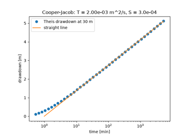

Breakthroughs in Hydrology#
Hydrology began as a measurement: Perrault showed in 1674 that the rain on a
basin is enough to feed its river. The engineers who supplied cities with
water then turned flow into formulas, Chézy and Manning for canals and
rivers, Darcy and Dupuit for sand and aquifers, while Dalton put evaporation
on a physical footing. The twentieth century added the unsaturated soil, with
Green and Ampt’s wetting front, Richards’s equation and Horton’s infiltration
capacity; the catchment as a linear system, with Sherman’s unit hydrograph and
McCarthy’s routing; the well, with Theis’s solution and Cooper and Jacob’s
shortcut; the geometry of river networks; the physics of evaporation from
water and leaves; and finally a model that maps where runoff forms. This
chronology traces the results behind earthsciencekit.hydrology. Every
example uses deterministic synthetic inputs; none inverts real measurements.
1674 – Perrault’s Catchment Water Balance#
Pierre Perrault measured the rain at Paris for three years and estimated the flow of the Seine above Aignay-le-Duc. The rain falling on the basin was about six times what the river carried, so precipitation alone could feed rivers and springs, against the long-held view that they rise from the sea through the ground. The water balance, precipitation minus evaporation minus runoff equals the change in storage, is still the first equation of hydrology.
Implementation: water_balance() (new) and
runoff_coefficient() (new). The example
balances a synthetic year whose river carries a sixth of the rain.
References: P. Perrault, De l’origine des fontaines (Paris: Pierre le Petit, 1674).
1775 – Chézy’s Open-Channel Formula#
Antoine de Chézy, asked to design a canal bringing the water of the Yvette to
Paris, balanced the weight of the water down the slope against a bed friction
proportional to the square of the velocity. The mean velocity of uniform flow
is then C sqrt(R S), with R the flow area over the wetted perimeter
and S the slope. His report stayed in manuscript until Clemens Herschel
published it in 1897.
Implementation: chezy_velocity() (new)
and hydraulic_radius() (new). The example
compares rectangular canals of different widths with the wide-channel limit.
References: C. Herschel, “On the origin of the Chézy formula,” Journal of the Association of Engineering Societies 18 (1897): 363-369.
1802 – Dalton’s Evaporation Law#
John Dalton measured the water lost from vessels kept at different temperatures and found that evaporation is proportional to the difference between the vapour pressure at the temperature of the water and that of the vapour already in the air, and that it increases with the wind. In still, saturated air it stops. Every bulk-transfer formula for evaporation since then has Dalton’s form.
Implementation: dalton_evaporation()
(new), with saturation_vapor_pressure().
The example shows evaporation falling linearly to zero as the air approaches
saturation, faster in stronger wind.
References: J. Dalton, “Experimental essays on the constitution of mixed gases; on the force of steam or vapour from water and other liquids in different temperatures, both in a Torricellian vacuum and in air; on evaporation; and on the expansion of gases by heat,” Memoirs of the Literary and Philosophical Society of Manchester 5 (1802): 535-602.
1856 – Darcy’s Law#
Henry Darcy, who had built the water supply of Dijon, measured the flow of water down columns of sand under different heads. The discharge per unit area was proportional to the loss of head divided by the length of the column, with a constant set by the sand. Written for the hydraulic head, the sum of the elevation and the pressure head, Darcy’s law governs all slow flow through porous media.
Implementation: hydraulic_head() (new),
darcy_flux() (new) and
seepage_velocity() (new). The example
repeats the sand-column experiment for three sands.
References: H. Darcy, Les fontaines publiques de la ville de Dijon (Paris: Victor Dalmont, 1856).
1863 – Dupuit’s Unconfined Flow#
Jules Dupuit treated flow beneath a gently sloping water table as horizontal, with a velocity uniform on each vertical and set by the slope of the water table. Darcy’s law then makes the discharge proportional to the saturated thickness times its slope, so between two rivers the squared height of the water table falls linearly and the profile is a parabola. Forchheimer later showed that the discharge formula is exact.
Implementation: dupuit_head() (new) and
dupuit_discharge() (new). The example
draws water tables between two rivers and checks that each section carries
the same discharge.
References: J. Dupuit, Études théoriques et pratiques sur le mouvement des eaux dans les canaux découverts et à travers les terrains perméables, 2nd ed. (Paris: Dunod, 1863).
1889 – Manning’s Formula#
Robert Manning tested the many formulas proposed since Chézy against gaugings
of rivers and canals and found that the Chézy coefficient grows roughly as the
sixth root of the hydraulic radius. The velocity becomes
R**(2/3) S**(1/2) / n, with a single roughness number for each kind of
bed. Read to the Institution of Civil Engineers of Ireland in December 1889,
it became the standard formula of channel design.
Implementation: manning_velocity() (new)
and chezy_from_manning() (new). The
example shows how the Chézy coefficient varies with depth and bed.
References: R. Manning, “On the flow of water in open channels and pipes,” Transactions of the Institution of Civil Engineers of Ireland 20 (1891): 161-207.
1911 – Green and Ampt’s Infiltration#
W. Heber Green and G. A. Ampt pictured water entering a soil as a sharp front, saturated behind and dry ahead, driven by gravity and by the capillary suction at the front. The infiltration rate starts high and falls toward the saturated conductivity as the wetted zone deepens, and the time to absorb a given depth has a closed form. Mein and Larson (1973) extended it to steady rain, which the soil absorbs entirely until the surface ponds.
Implementation: green_ampt_rate() (new),
green_ampt_time() (new) and the dynamic
simulate_infiltration() (new). The example
compares a soil ponded from the start with one under steady rain.
References: W. H. Green and G. A. Ampt, “Studies on soil physics. Part I. The flow of air and water through soils,” Journal of Agricultural Science 4 (1911): 1-24; R. G. Mein and C. L. Larson, “Modeling infiltration during a steady rain,” Water Resources Research 9 (1973): 384-394.
1931 – Richards’s Equation#
Lorenzo Richards applied Darcy’s law to soil that is not saturated, where the conductivity depends on the capillary suction, and combined it with the conservation of water. The result, Richards’s equation, governs the movement of soil water. In steady flow the flux is the same at every height, and with Gardner’s (1958) exponential conductivity the suction above a water table has a closed form, including a height above which evaporation cannot be supplied.
Implementation: gardner_conductivity()
(new), unsaturated_darcy_flux() (new)
and richards_steady_head() (new). The
example draws steady profiles for infiltration, no flow and evaporation.
References: L. A. Richards, “Capillary conduction of liquids through porous mediums,” Physics 1 (1931): 318-333; W. R. Gardner, “Some steady-state solutions of the unsaturated moisture flow equation with application to evaporation from a water table,” Soil Science 85 (1958): 228-232.
1932 – Sherman’s Unit Hydrograph#
LeRoy Sherman proposed that a catchment responds linearly to rain: a unit depth of excess rainfall in a given interval always produces the same hydrograph, and a storm produces the sum of these responses, each shifted to its time and scaled by its depth. The unit hydrograph made flood forecasting a matter of convolution. Nash (1957) later gave it a smooth form as a cascade of linear reservoirs.
Implementation: unit_hydrograph_convolution()
(new) and nash_unit_hydrograph() (new).
The example builds a storm hydrograph from three hours of rain.
References: L. K. Sherman, “Streamflow from rainfall by the unit-graph method,” Engineering News-Record 108 (1932): 501-505; J. E. Nash, “The form of the instantaneous unit hydrograph,” IASH Publication 45 (1957): 114-121.
1933 – Horton’s Infiltration Capacity#
Robert Horton described the soil surface as a separator of rain: up to its infiltration capacity water enters the soil, and the excess runs off over the surface. The capacity falls exponentially during a storm from an initial to a steady value. Infiltration-excess, or Hortonian, overland flow became the standard picture of how storms produce floods.
Implementation: horton_infiltration_rate()
(new) and horton_cumulative_infiltration()
(new). The example measures the overland flow of a steady storm.
References: R. E. Horton, “The role of infiltration in the hydrologic cycle,” Transactions, American Geophysical Union 14 (1933): 446-460.
1935 – Theis’s Well Solution#
Charles Theis saw that the flow of groundwater toward a pumped well obeys the
same equation as heat conduction, and took the solution for a line sink from
the theory of heat. The drawdown grows without limit as the well draws water
from storage, and it depends on distance and time only through
u = r**2 S / (4 T t), through the exponential integral now called the well
function.
Implementation: well_function() (new)
and theis_drawdown() (new). The example
collapses three observation wells onto one type curve.
References: C. V. Theis, “The relation between the lowering of the piezometric surface and the rate and duration of discharge of a well using ground-water storage,” Transactions, American Geophysical Union 16 (1935): 519-524.
1938 – McCarthy’s Muskingum Routing#
Gerald McCarthy, studying flood control on the Muskingum River in Ohio, wrote the water stored in a river reach as a weighted mix of its inflow and outflow. With continuity, the outflow becomes a fixed linear combination of the latest inflows and the previous outflow, which delays and flattens a flood as it travels downstream. The Muskingum method is still used in river forecasting.
Implementation: muskingum_coefficients()
(new) and muskingum_routing() (new). The
example routes a flood through a reach for three weightings.
References: G. T. McCarthy, “The unit hydrograph and flood routing,” unpublished paper, Conference of the North Atlantic Division, U.S. Army Corps of Engineers (1938).
1945 – Horton’s Laws of Stream Numbers#
Robert Horton ordered the streams of a basin from the unbranched headwaters up to the main river and found that the number of streams of each order falls in a geometric series and their mean length grows in another. A bifurcation ratio of three to five and a length ratio of about two summarize a whole network. Strahler (1952) simplified the ordering into the form used today.
Implementation: stream_number() (new)
and stream_length() (new). The example
fits both ratios to a synthetic fifth-order basin.
References: R. E. Horton, “Erosional development of streams and their drainage basins; hydrophysical approach to quantitative morphology,” Geological Society of America Bulletin 56 (1945): 275-370.
1946 – Cooper and Jacob’s Straight-Line Method#
Hilton Cooper and Charles Jacob noticed that for small u the Theis well
function reduces to -0.5772 - ln u, so late drawdowns lie on a straight
line against the logarithm of time. Its slope per log cycle gives the
transmissivity, and its zero-drawdown intercept the storativity, without
matching a type curve by eye.
Implementation: cooper_jacob_drawdown()
(new) and cooper_jacob_transmissivity()
(new). The example recovers the aquifer properties from a synthetic pumping
test.
References: H. H. Cooper and C. E. Jacob, “A generalized graphical method for evaluating formation constants and summarizing well-field history,” Transactions, American Geophysical Union 27 (1946): 526-534.

Cooper and Jacob’s straight-line method (1946)
1948 – Penman’s Evaporation#
Howard Penman combined the energy balance of a wet surface with Dalton’s law and linearized the saturation curve between air and surface temperature, so that the surface temperature, rarely measured, drops out. Evaporation becomes a weighted mean of a radiation term and an aerodynamic term computed from routine weather observations.
Implementation: penman_evaporation()
(new), saturation_slope() (new) and
psychrometric_constant() (new). The example
compares Penman’s equation with the energy balance solved for the surface
temperature.
References: H. L. Penman, “Natural evaporation from open water, bare soil and grass,” Proceedings of the Royal Society of London A 193 (1948): 120-145.
1965 – Monteith’s Canopy Resistance#
John Monteith treated a vegetated surface as one big leaf whose stomata add a surface resistance in series with the aerodynamic resistance of the air. The Penman-Monteith equation reduces to Penman’s for a wet surface and shows how closing stomata throttle transpiration. With fixed resistances for a clipped grass it is the FAO reference evapotranspiration (Allen et al. 1998).
Implementation: penman_monteith_evaporation()
(new), aerodynamic_resistance() (new) and
bulk_surface_resistance() (new). The
example computes the reference grass and the effect of the surface resistance.
References: J. L. Monteith, “Evaporation and environment,” Symposia of the Society for Experimental Biology 19 (1965): 205-234; R. G. Allen, L. S. Pereira, D. Raes and M. Smith, Crop evapotranspiration, FAO Irrigation and Drainage Paper 56 (Rome: FAO, 1998).
1979 – Beven and Kirkby’s TOPMODEL#
Keith Beven and Mike Kirkby built a catchment model around the saturated
areas that expand and contract with wetness and produce most storm runoff.
Where the ground saturates depends on the topographic index
ln(a / tan(beta)), high where a large area drains through a gentle slope,
and a single catchment-mean storage deficit then fixes the local deficit
everywhere and an exponentially receding baseflow.
Implementation: topographic_index()
(new), topmodel_deficit() (new) and
topmodel_baseflow() (new). The example
maps the index on a convergent hillslope and follows the saturated area as
the catchment dries.
References: K. J. Beven and M. J. Kirkby, “A physically based, variable contributing area model of basin hydrology,” Hydrological Sciences Bulletin 24 (1979): 43-69.
See also#
Hydrology: units, equations and validation for conventions, equations and checks.